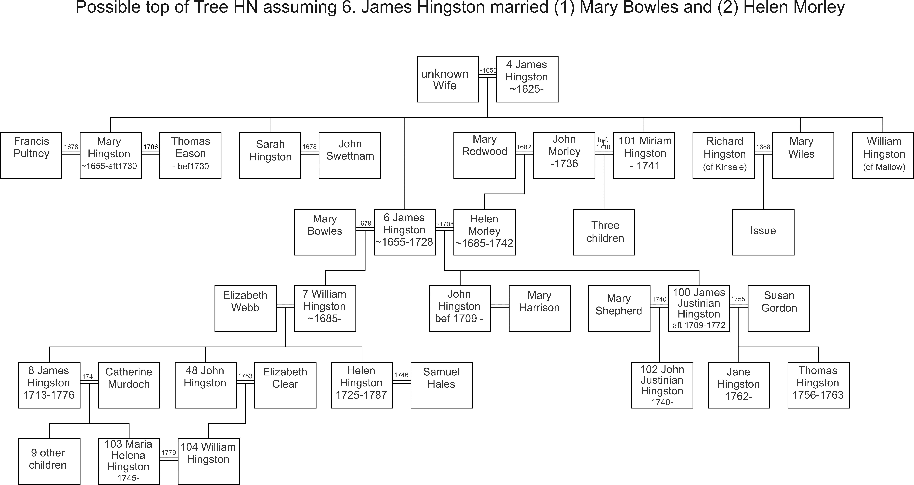

At the top of Tree HN we have a complex relationship between the Hingston and Morley families. It would appear that John Morley, who was Mayor of Cork in 1718, married Miriam Hingston, sister of 6. James, but we also believe that 6. James married Helen Morley, John's daughter. If Helen was Miriam's daughter such a relationship would be illegal.

John and James were of similar age, although we don't know either of the dates of birth. The only way I can make things work out is if both men married twice and if Helen was James' second wife, while Miriam was John's second wife. This page explains what we know and what I have assumed.
The chart below summarises the interaction of the principal characters. The vertical lines are the lifetimes of the person, with a big circle when they were born and a cross when they die. If we know the date it is given. The lifeline is dashed if I am uncertain.
A solid horizontal with black dots is a marriage, with a date if we know it.
A dashed horizontal line links a birth to the two parents.
The information we have about 6. James Hingston and John Morley is limited. The records about 6. James come mainly from the history passed down through the family and is not confirmed by public records. There is one entry in the marriage licence bond indexes (MLBI). For John Morley we don't have a family history but we have recently come across an Exchequer Bond dated 1730 in favour of James Justinian Hingston, then a minor (so born after 1709), and his brother John (presumably born before 1709). The bond was taken out by Miriam (or Marian) Morley and her husband John Morley, alderman, who is described as the boys' uncle. The bond also mentions Mary Eason, a widow. It should be noted that 6. James died in 1728 so presumably Miriam and John Morley were taking care of the youngsters' affairs. The rest of this document discusses that evidence.
We believe 6. James Hingston was born about 1655 and died in 1728. He had three children that we know about:-
The family history says that James married Mary Bowles but also says that a James married Helen, daughter of John Morley. In the past this led us to think that there might be two different James Hingstons, but in Tree HN it is argued that this reading is very unlikely and that it is probable 6. James married twice. The exchequer bond of 1730 means that James Justinian was born after 1709 and implies that John was still relatively young. They were thus about 25 years younger than 7. William so it is likely that 7. William is the son of 6. James' first wife, Mary Bowles, while John and James Justinian are the sons of the second marriage to Helen Morley.
Now consider John Morley. There are two John Morley marriages recorded in the Irish marriage licence bond indexes, which are not complete.
We know John was Mayor of Cork in 1718 died in 1736. If he was 25 at his marriage, and he married Mary Harris, he would have been born in 1645, so would have been 73 when Mayor and 91 at his death. If he married Mary Redwood he would have been born in ~1657, aged ~61 when Mayor and ~79 at his death. I think the latter is more likely and the chart is based on that assumption.
The 1730 Exchequer Bond shows that John later married 101. Miriam Hingston; there were three marriages of their children in 1733, 1734 and 1743, so if they were 21 at the time of the marriage the eldest would have been born by 1712 with the marriage taking place ~1710.
Now consider Helen Morley , John's daughter and wife of 6. James Hingston. She would have been born after John's marriage in 1682, and probably after 1683. If she was the mother of John Hingston, who we believe was older than 21 in 1730, so born before 1709, she had to marry 6. John by about 1708. If she was 21 at the time of her marriage she had to be born before 1687. That gives us a fairly narrow window for her birth (1683-87).
What about the other side of the coin? We believe 101. Miriam Hingston was the youngest of the family of 4 or 5 children of 4. Major James Hingston and that he married in about 1653. So with 2 year gaps between children Miriam would have been born around 1665. We know she had three daughters with John Morley who married in 1732, 1733 and 1743. So if they were 21 when they married the eldest must have been born by 1712, by which time Miriam would have been 47; that is quite old to be having three children, so the chances are that Miriam was born later than 1665 and/or married well before 1712. If she was born c.1670 and married when 30, the marriage would have been about 1700.
Of course these dates have implications for the date of death of the first wives. We are only postulating one child for Mary Bowles, so if she died during her confinement with the second that could have been around 1687. John Morley's first wife probably died 1695 - 1705.
Return to Hingston One-Name Study
Added 30th May 2020. Chris Burgoyne